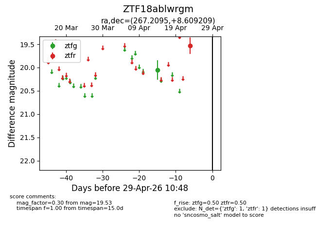
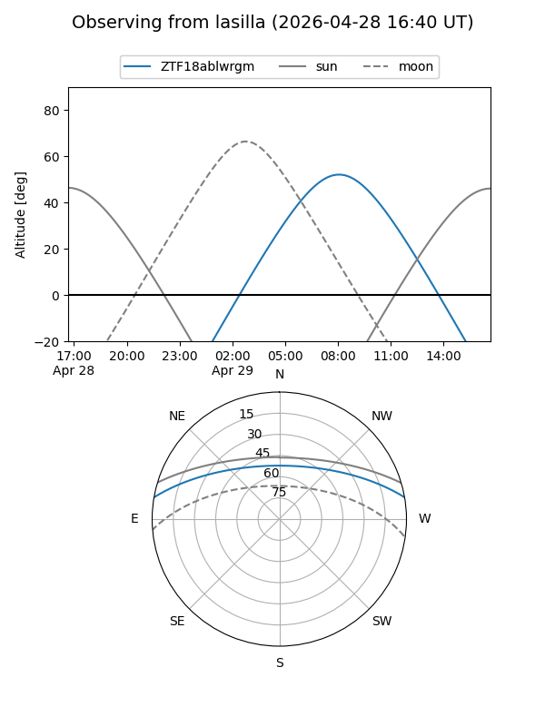
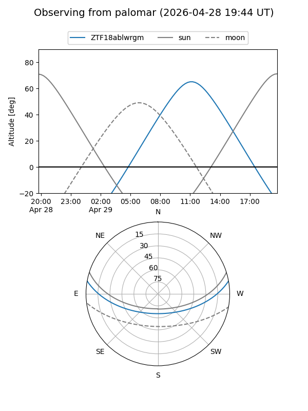

ZTF18ablwrgm
Target ZTF18ablwrgm at 2026-04-29 10:51
Aliases and brokers:
FINK: link
Lasair: link
ALeRCE: link
alt names
ZTF18ablwrgm (ztf,fink_ztf)
Coordinates:
equatorial (ra, dec) = 267.2095,+8.60921
equatorial (HMS+DMS) = 17:48:50.29,+08:36:33.15
galactic (l, b) = (33.6304,+17.79639)
Flags:
Photometry:
last ztfg=20.05, ztfr=19.53
1 ztfg, 1 ztfr detections
Lightcurve

Visibility


Additional plots